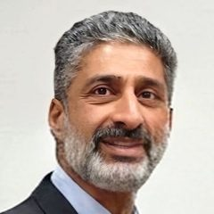
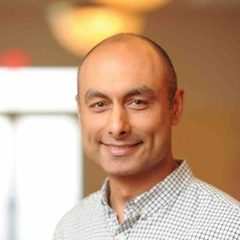
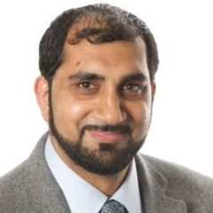
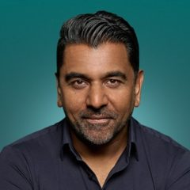

Dr Andrew RoddamChair, Governance and Ethics Board (independent)
Dr Andrew RoddamChair, Governance and Ethics Board (independent)Former Chief Executive of Our Future Health, the UK's largest health-research programme, built from a new organisation into a national cohort designed for five million participants. Oxford DPhil statistician; Chair of SNOMED International. Holds every LydiaRx programme to its published standard, independently of the company.

Najib-Ur RehmanCo-Founder and Chief ExecutiveTwenty years in life-sciences data and AI. At Pfizer, took over a US$1 billion global enterprise-analytics programme in difficulty and led its recovery and delivery over ten years, directing some 300 people across three continents. Adviser to Pfizer and AstraZeneca on large-scale data analysis. Leads delivery in-country.
 Prof. Kathleen BarnesScientific Committee Chair
Prof. Kathleen BarnesScientific Committee ChairDirector of the Colorado Center for Personalized Medicine and Professor of Medicine, University of Colorado Anschutz. Led the Center's partnership with Regeneron to sequence 450,000 patients; principal investigator on studies collecting more than 165,000 biospecimens in under-represented populations. Owns cohort and analysis design.

Khurem FarooqStrategic AdviserThree-time biotechnology chief executive. Led Aiolos Bio to acquisition by GSK and Gyroscope Therapeutics to acquisition by Novartis, some US$2.9 billion in aggregate exit value. Former senior vice president at Genentech/Roche. Advises on what pharmaceutical partners expect of sovereign data.
 Dr Mark BaleAdviser, National Programme Design and Bioethics
Dr Mark BaleAdviser, National Programme Design and BioethicsProgramme Director of the UK's 100,000 Genomes Project; former Deputy Chief Scientific Adviser, Department of Health and Social Care; Head of Science Partnerships at Genomics England, 2015–22. Chaired the Council of Europe's bioethics committee and led G7 work on pathogen surveillance.
Two decades as a lawyer and law-firm managing partner in the United Kingdom, structuring government and sovereign-fund transactions across Pakistan, Türkiye, the Middle East and North Africa. Architect of the data-sovereignty model, the supplier terms and the Sovereignty and Trust Charter; owns ethics and consent.

Dr Shahid HanifHealth Data and Pharma Commercial AdviserManaging Director of the GetReal Institute; formerly Head of Health Data and Outcomes at the ABPI, where for a decade he represented the UK pharmaceutical industry on health data. Advises on the consent and data standards research partners require.
 Dr Jacqueline HallAdviser, Clinical Research and Genomics Programme Delivery
Dr Jacqueline HallAdviser, Clinical Research and Genomics Programme DeliveryFounder of Vivactiv, a genomics and clinical-research consultancy; some two decades in genomics, translational clinical research and advanced analytics, with leadership roles at IQVIA and the EORTC. PhD, Glasgow; postdoctoral research at McGill. Advises on clinical-research quality standards.
 James PeachAdviser, Genomics Programmes and Drug Discovery
James PeachAdviser, Genomics Programmes and Drug DiscoveryCo-Founder and Chief Executive of Human Centric Drug Discovery, an Oxford University spin-out. Part of the team that established Genomics England and the 100,000 Genomes Project, and built its cancer genomics programme with AstraZeneca, Pfizer and Cancer Research UK. Advises on turning a cohort into research that attracts partners.

Dr Imran KausarRegulatory and Therapeutic AdviserUnited Kingdom pharmaceutical physician; former roles at Sobi, Novartis Gene Therapies and Akcea; has taken rare-disease and gene-therapy products through European regulators. Advises on the clinical-governance obligations of returning findings to participants.
Beyond those named. LydiaRx draws on further senior figures from Genomics England and the Global Alliance for Genomics and Health. Each adviser participates in a personal capacity; affiliations are for identification only, as at October 2026.